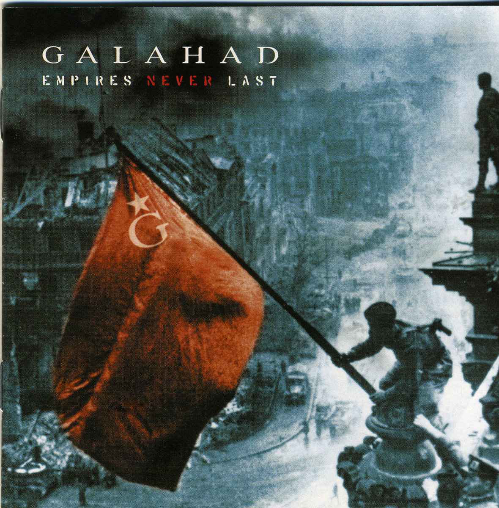
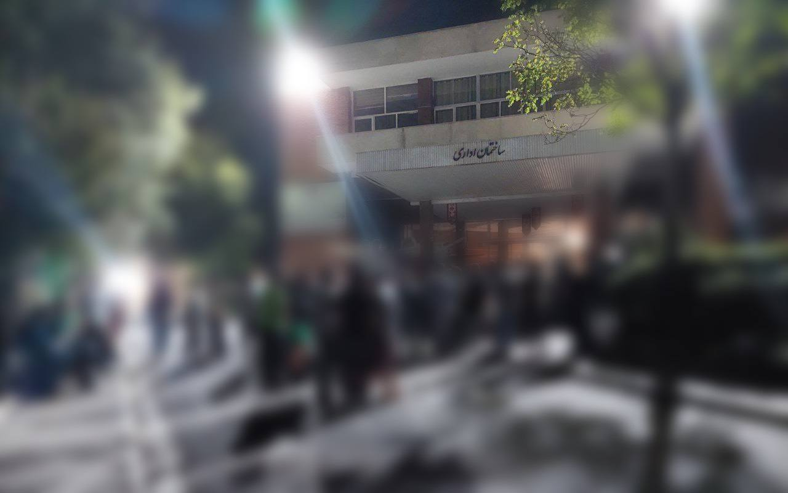

(This was supposed to be finished on October 12, 2025)
For the last two weeks, students in KNTU ( My uni ) primarily consisting of dormitory residents in Danesh 1 & Danesh 2 Dormitories, have been protesting once every night.
Their main concern? Criticizing The absolute mess KNTU is in right now.
For those of you don’t know the university is not centralized in a specific place, it is actually spread across different regions of Tehran. While most ( not all ) of dormitories are centralized close to only one or two faculties.
This of course, makes the subject of transportation across faculties a very much important problem. Logically one would suppose a university with this sort of logistical background, would accommodate students fully, giving them access to day-round buses around the city, catered for the specific routes on which the faculties fall on.
Well, As it so happens the main concern and on of the points of arguments were Transportation.
Two of the main timeslots where students needed busses the most were taken out, and hence people cared much about this issue.
Food Sucks.
One would not think the food in a so called scientific establishment could suck more than a low grade military barracks.
To add a top that, it is now more expensive than EVER! yippie.
of course people are not gonna buy that.

Some Officials from the central office along with some from the Ministry of Science make their way to dormitory yard.
The students gather them, chanting , some trying to guerrila-talk their way into showing their concerns and demands.
They suggest a sit down in the mosque , where they can hear the students better by them taking turn in talking.
Everyone knows fully by now, that granting them this, would officially mean granting them a position of high-to-low stance where they pick and choose what they want to hear and what and who to answer to.
Having said this the people just keep chanting, the officials move to the main faculty mosque, people outside still chanting.
Someone finally peeks into the mosque, what could the officials be doing that would be better than listening to the peoples demands?
Yep, that’s about the state of affairs here.
Off we Go!
I see Earth! It is so beautiful!
That night and all these nights, had one major result.
The two time slots most important to uni students , were put back in place.
Many issues remain untouched and untended.
But the greatest thing to notice :
It works when people gather. *They truly don’t have enough bullets*